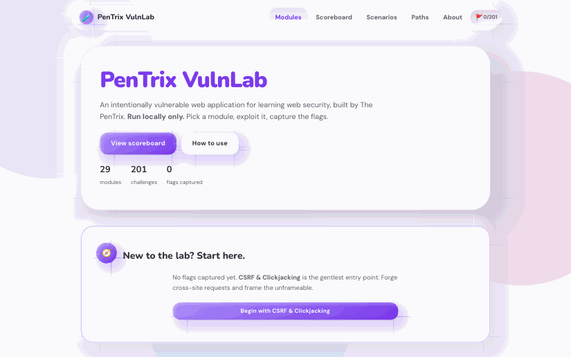
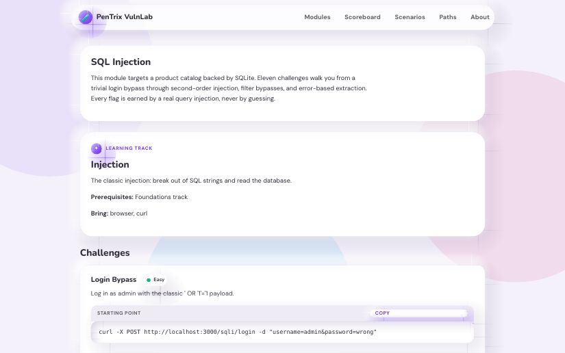
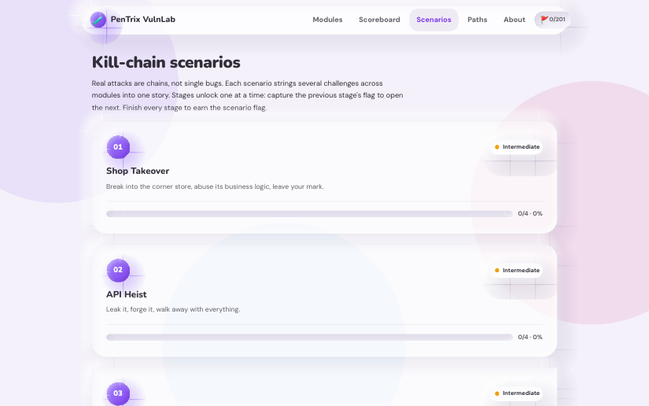

Challenge library
201 challenges across 29 modules, each one its own page and its own little website. SQLi, XSS, auth bugs, IDOR, SSRF, file upload, deserialization, and more.
201 challenges
Intentionally vulnerable. Honestly educational.
Every challenge is a small, genuine website with a real bug. 201 challenges across 29 modules, and every single flag is earned by real exploitation: nothing leaks from source, shortcuts get rejected.
Simulated demo. No real systems.
Simulated demo. No real system, every keystroke is scripted.
$ ./pentrix-demo --target login-bypass
[*] SIMULATION: no real system involved
[+] typing username: admin' --
[+] typing password: ********
[+] server: 200 OK, welcome back, admin
[+] flag captured: PENTRIX{DEMO-SIMULATED-FLAG}
Real apps, real bugs, real exploitation. No filler, no spoilers, no shortcuts that count.
201 challenges across 29 modules, each one its own page and its own little website. SQLi, XSS, auth bugs, IDOR, SSRF, file upload, deserialization, and more.
Exploit the bug, then patch the code. The lab re-runs the exploit against your fix in a sandbox and tells you whether it holds. Learn both sides of the vulnerability.
Three multi-stage scenarios that chain bugs into full compromises: Shop Takeover, API Heist, and Ghost in the CMS. New stages unlock as you progress.
Guided paths for Zero to Web Pentester, API Hacker, and Authentication Assassin. Finish a path and earn a verifiable PNG certificate bound to your install.
Flags look like PENTRIX{32 hex} and are generated on your machine at first boot. There is no flag literal anywhere in the source, so nothing can leak.
Stuck? Every challenge has a 3-level hint ladder, and full walkthroughs live in SOLUTIONS.md. You get guidance when you need it, never the flag for free.
The real thing: a clay-styled dashboard, modules, scenarios, and certificates you can actually earn.




How PenTrix VulnLab compares to the labs you already know.
| Feature | PenTrix VulnLab | Juice Shop | WebGoat | PortSwigger Academy |
|---|---|---|---|---|
| Challenges | 201 | 100+ | Lesson-based | Extensive |
| Flags random per install | Yes | No | No | N/A |
| Shortcut exploits rejected | Yes | Partial | No | Yes |
| Break-then-fix mode | In development | No | No | No |
| Kill-chain scenarios | Yes, 3 | No | No | Partial |
| Guided career paths | Yes, 3 with certificates | No | Lessons | Yes |
| One-command local setup | Yes | Yes | Yes | Browser only |
| Fully open source | Yes | Yes | Yes | No |
The short version. The full docs have the long version.
Yes, on your own machine. The lab is built to run localhost-only: the Docker setup binds to localhost, drops Linux capabilities, limits memory and CPU, and includes a healthcheck. Keep it on your own machine or an isolated lab network, and never point it at anyone else's systems.
No. PenTrix VulnLab is intentionally vulnerable, so a public deployment would be compromised within hours. Run it only on your own machine or an isolated lab network.
Every flag looks like PENTRIX{32 hex} and is generated randomly on your machine at first boot. No flag exists in the source code, so the only way to get one is to genuinely exploit the challenge. Shortcuts earn nothing: bare beacons get 400, token replays get 400.
Open-source security tools, AI experiments, and learning resources. Built in the open on GitHub.
The ultimate cybersecurity library: 160+ curated books, guides, and resources in one place.
An AI-powered Linux terminal assistant. Describe what you want in plain English and get the command.
A 30-day practical pentesting initiative. Learn by doing, one hands-on day at a time.
OSINT framework with a command-line interface and a web GUI for open-source intelligence gathering.
Plain English to Windows commands. The Windows sibling of Ai-Terminal-X.
AI-powered reconnaissance toolkit with a cyberpunk web dashboard.
All-in-one bug bounty and penetration testing automation framework.
Modular AI-powered penetration testing framework.
AI cybersecurity learning platform with RAG and multi-provider LLM support.